Перенос базы данных Microsoft SQL Server с одного компьютера на другой
Перенос осуществляется в 3 этапа:
- Создание резервных копий баз данных программы TourFX на старом сервере.
- Восстановление резервных копий на новом сервере.
- Настройка прав доступа к базам данных на новом сервере.
Создание резервных копий
Подключитесь к старому SQL-серверу с помощью программы SQL Management Studio под пользователем SA. Выберите проверку
подлинности "SQL Server".
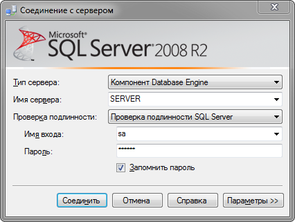
В Обозревателе объектов раскройте список с базами данных.
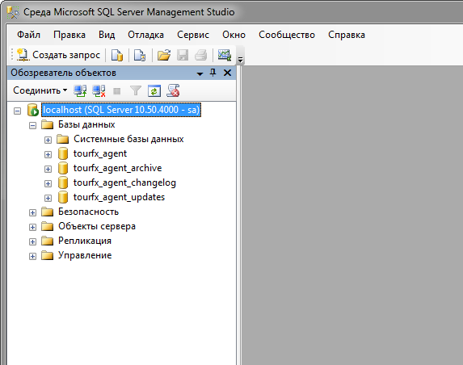
С помощью контекстного меню, вызываемого нажатием правой кнопки мыши над пунктом tourfx_agent, откройте форму создания резервной копии.
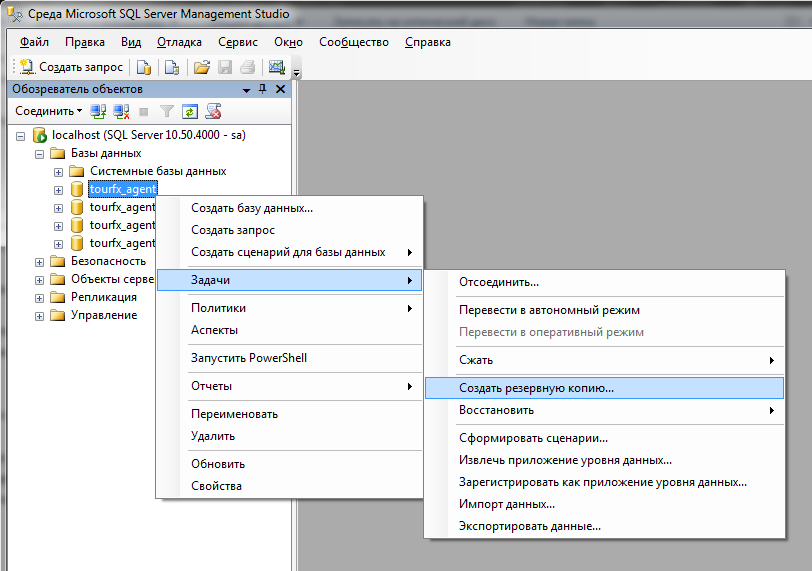
Проверьте, что открывшаяся форма соответствует изображенной на следующем снимке экрана. Нажмите ОК. Файл резервной
копии будет сохранен в файле tourfx_agent.bak в папке C:\Program Files\Microsoft SQL Server\MSSQL10_50.MSSQLSERVER\MSSQL\Backup
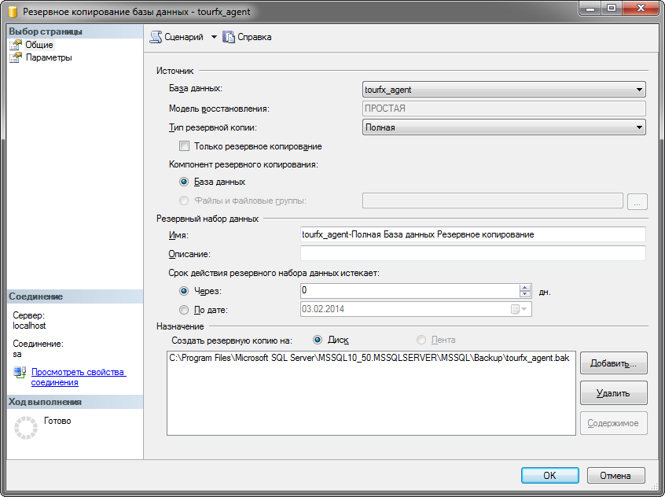
Повторите процедуру для остальных трех баз: tourfx_agent_archive, tourfx_agent_changelog, tourfx_agent_updates.
Восстановление резервных копий
Скопируйте файлы резервных копий на новый сервер. Установите Microsoft SQL Server на новом сервере.
Подключитесь к новому SQL-серверу с помощью программы SQL Management Studio под пользователем SA.
В Обозревателе объектов с помощью контекстного меню, откройте форму восстановления резервной копии.
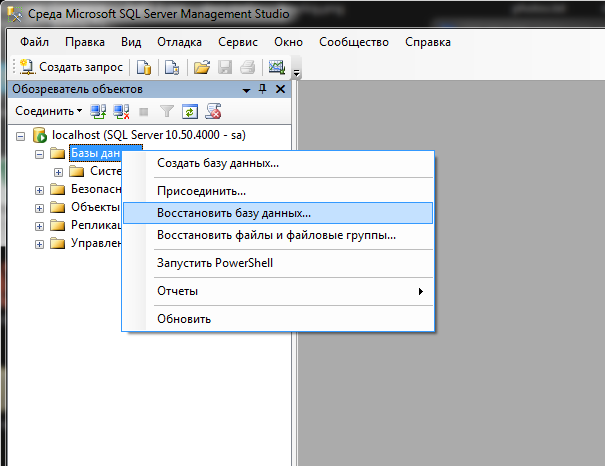
В открывшейся форме в поле "В базу данных" введите tourfx_agent. Выберите источник С устройства, нажмите кнопку
с тремя точками.
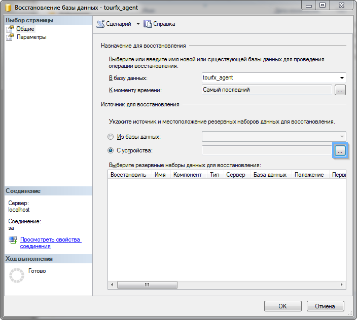
В открывшемся окне нажмите кнопку Добавить и выберите файл резервной копии tourfx_agent.bak.
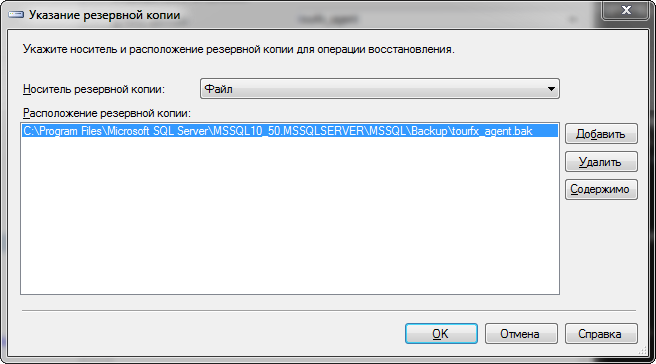
В колонке "Восстановить" поставьте галку.
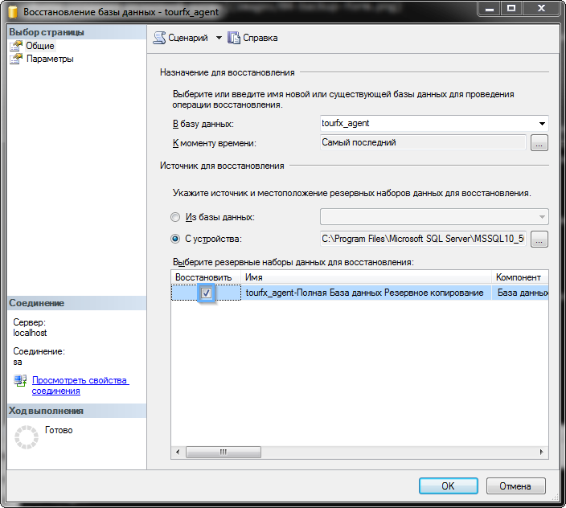
Нажмите ОК. База данных tourfx_agent восстановится.
Таким же образом восстановите остальные 3 базы. Выбирайте соответствующие файлы bak и в поле "В базу данных" указывайте
tourfx_agent_archive, tourfx_agent_changelog и tourfx_agent_updates. Например, для базы tourfx_agent_changelog
форма восстановления будет иметь следующий вид:
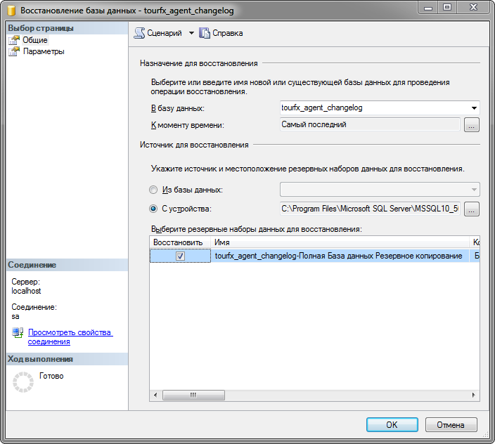
Настройка прав доступа
На данном шаге мы определим права доступа к четырем восстановленым базам данных. При резервном копировании в файл
резервной копии включаются права доступа пользователя tourfx_agent к базам, но этот пользователь ассоциирован с
Именем входа на старом сервере и не будет работать на новом. Поэтому сначала нужно удалить пользователя tourfx_agent
из каждой базы.
Раскройте пункт базы данных tourfx_agent и в подпункте Пользователи удалите пользователя tourfx_agent с помощью
контекстного меню (или просто кнопкой Delete).
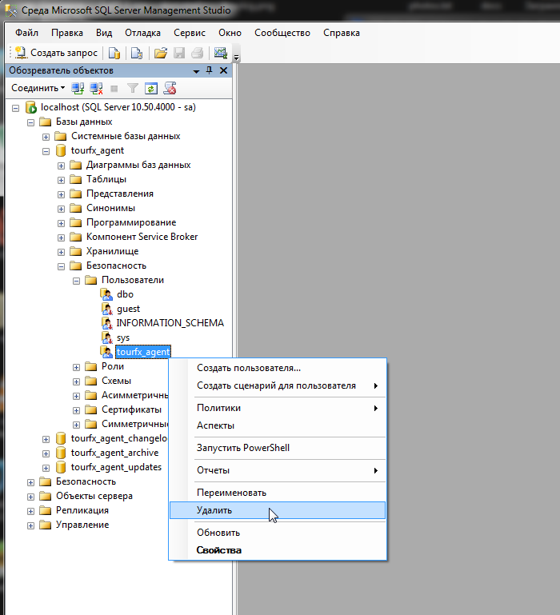
Таким же образом раскройте пункты баз данных tourfx_agent_archive, tourfx_agent_changelog и tourfx_agent_updates
и в них удалите пользователя tourfx_agent.
Добавляем новое Имя входа tourfx_agent и соответствующих пользователей в базы данных, устанавливаем для них права доступа.
Раскройте пункт "Безопасность" и, нажав на подпункте "Имена входа" правой кнопкой мыши, в контекстном меню выберите "Создать имя входа...".
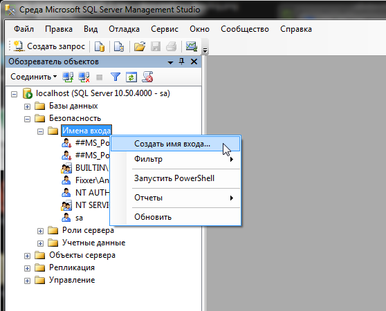
В открывшейся форме в поле "Имя входа" введите значение tourfx_agent. Выберите "Проверка подлинности SQL Server".
Снимите галку "Требовать использование политики паролей". Введите пароль в поля "Пароль" и "Подтверждение пароля".
Выберите базу по умолчанию tourfx_agent.
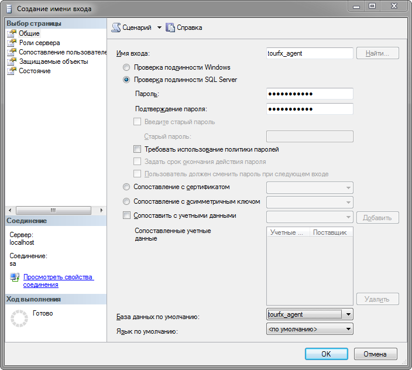
В левом верхнем списке выберите страницу "Сопоставление пользователей". Для каждой из четырех баз поставьте галку в колонке "Схема" и в нижнем списке "Членство в роли базы данных" отметьте галкой значение db_owner.
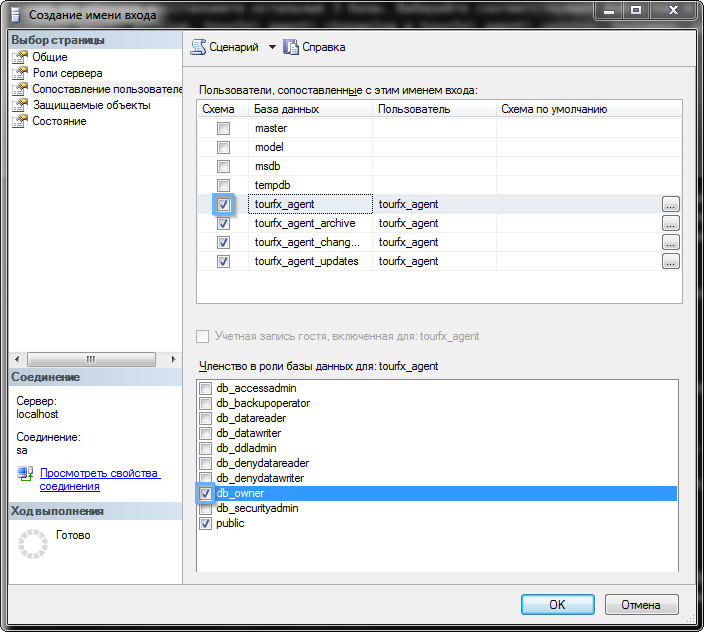
Обратите внимание, галку db_owner нужно проставить для каждой базы после установки галки в колонке "Схема".
Нажмите ОК. Настройка прав закончена.
Остались вопросы? Напишите нам на e-mail